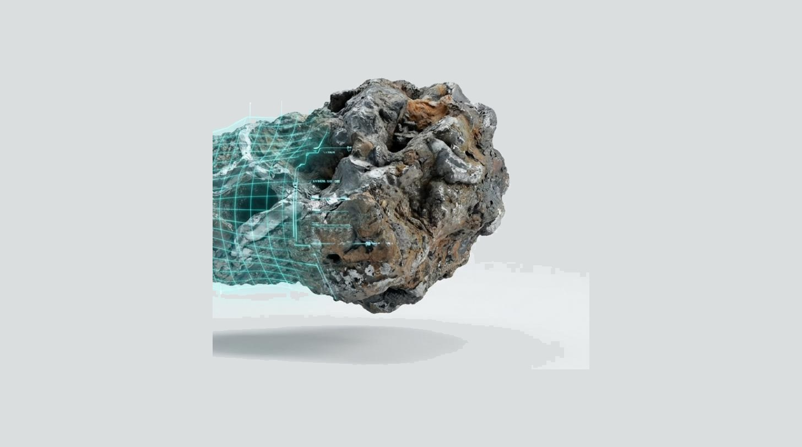
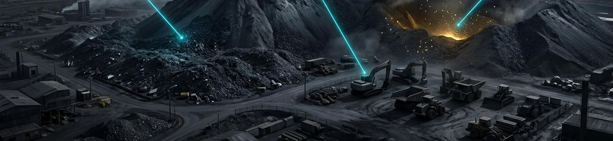
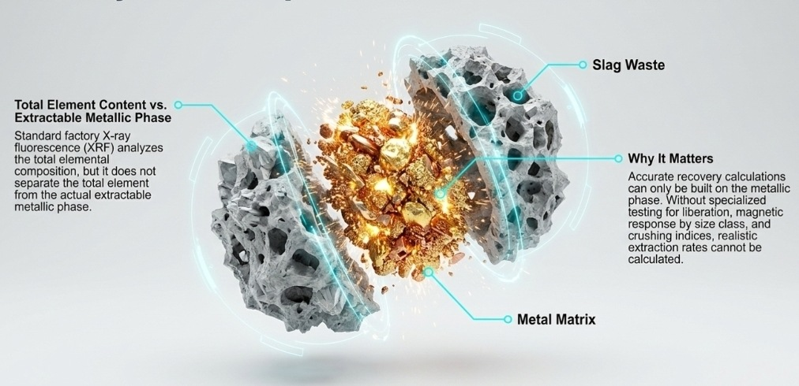
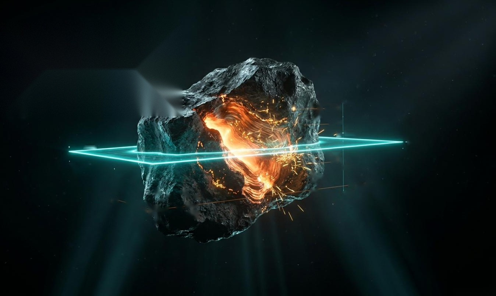
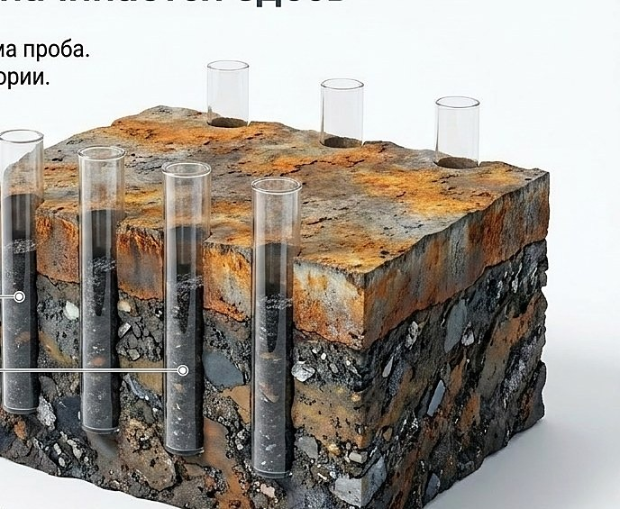
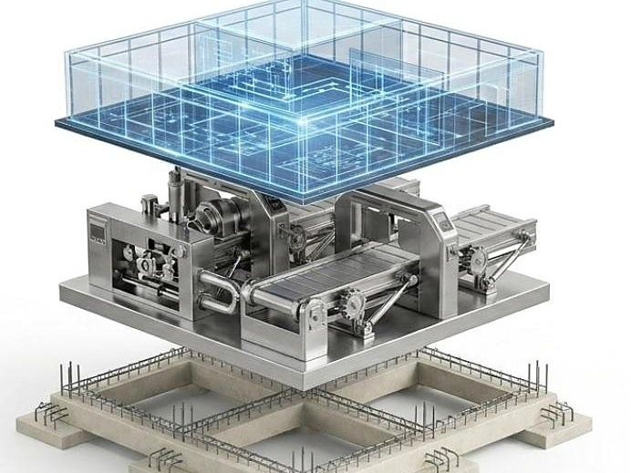

Land, upkeep, tightening requirements — the bill arrives whether or not you do anything about the dump. What is actually in it is usually unknown: plant certificates describe the alloy and fresh slag, not the body of the dump.
Every project starts with data, not assumptions.

The material does not have to leave your site.
After each stage, the decision to continue is yours.
If there is no case for it, we say so directly and stop.

Site upkeep, handling, keeping the dump in an acceptable condition.
Requirements for storage and handling are tightening, not easing.
The ground under the dump is occupied and unavailable for production.
What lies in the body of the dump has not been established. There is nothing to base a decision on.

During tapping and casting, part of the metal leaves together with the slag. This happens at any plant, and it has been accumulating in your dump for years.
How much is shown by analysis, not assumption. A plant certificate for the alloy will not show it: it describes what was produced, not what lies in the dump.

Major investment comes only after confirmed data.
We review what is known about the material today and what is missing for a decision.
To a programme written for the specific material. We have no laboratory of our own — testing is carried out by an independent laboratory.
Whether processing is justified. If it is not, we say so directly and stop.
Process route, equipment list, plant layout, coordination of supply.
Support of implementation on site.
Send the analyses your plant already has.
Run the tests in your own laboratory — to the programme we provide.
In both cases the material stays with you.
If your own data is not sufficient, send a sample. Testing is carried out by an independent laboratory to our programme.

Our first industrial facility is in preparation.
What we offer is not a list of built facilities but a method that is verified at every stage.
We do not supply equipment and we do not offer a ready-made line. We determine which solution suits your specific material, select equipment for it, and take the project through to an industrial complex.

We will tell you whether it makes sense to move forward. It commits you to nothing.
Submit material data